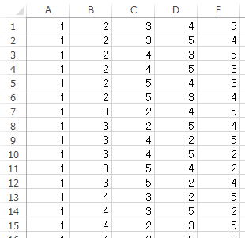

順列の全組み合わせ作成と応用方法
配列の要素の順番を入れ替えて、順列を作成しします、
順列とは
1,3,2
2,1,3
2,3,1
3,1,2
3,2,1
3! = 3*2*1 = 6
順列全てということであり、数学の「組み合わせ」と言う意味ではありません。
数学の「組み合わせ」とは、順番違いは1通りとして扱うものです。
順列の全組み合わせを作成するFunction
結果は、2次元配列で返します。
Public Sub permutation(ByRef aryIn, ByRef aryOut, Optional ByVal i As Long = 0)
Dim j As Long
Dim ix As Long
Dim sTemp
Dim ary
If i < UBound(aryIn) Then
For j = i To UBound(aryIn)
'配列を入れ替える
ary = aryIn
sTemp = aryIn(i)
aryIn(i) = aryIn(j)
aryIn(j) = sTemp
'再帰処理、開始位置を+1
Call permutation(aryIn, aryOut, i + 1)
aryIn = ary '配列を元に戻す
Next
Else
'配列の最後まで行ったので出力
If IsEmpty(aryOut) Or Not IsArray(aryOut) Then
ix = 0
ReDim aryOut(UBound(aryIn), ix)
Else
ix = UBound(aryOut, 2) + 1
ReDim Preserve aryOut(UBound(aryIn), ix)
End If
For j = LBound(aryIn) To UBound(aryIn)
aryOut(j, ix) = aryIn(j)
Next j
End If
End Sub
このアルゴリズム自体は、どこにでもあるものです。
上記のコードは、使い回しやすいように、
パブリック変数を使わずに、また、できるだけ引数を減らして書いたものです。
1次元が要素数、2次元が順列数となっています。
動的配列の要素数を変えられるのは、一番下の次元に限定されているため、
作成する順列は、2次元で増やしていくために、このようにしています。
配列内で順序を入れ替えつつ順に取り出すか、
配列から取り出してはそれを削除していくかのどちらかになるでしょう。
上のコードでは、配列内で順序を入れ替えつつ作成しています。
使用例1 ・・・ 配列の順列を作成しシートへ出力
Sub sample1()
Dim aryIn
Dim aryOut
'入力配列
aryIn = Array(1, 2, 3, 4, 5)
'順列作成
Call permutation(aryIn, aryOut)
'シートへ出力
Cells.ClearContents
Range("A1").Resize(UBound(aryOut, 2) + 1, UBound(aryOut, 1) + 1) = _
WorksheetFunction.Transpose(aryOut)
End Sub
※入力する配列が1から始まっている場合
↓
Call permutation(aryIn, aryOut, LBound(aryIn))
シートに出力する時には、
見やすいように、2次元を入れ替え順列数を縦に出力しています。
動的2次元配列の次元を入れ替えてシートへ出力（Transpose）

使用例2 ・・・ 区切り文字で区切られた文字列の順列を作成
この単語の順列を作成し、元のように半角スペースで区切った文字列を作成します。
Like演算子での部分一致判定としても利用することでが出来ます。
結果として、全ての順序での出現チェックをすることが出来るようになります。
（この処理だけであれば、順列以外での方法がいくらでもありますが）
Sub sample2()
Dim aryIn
Dim aryOut
Dim aryRtn
Dim i As Long
Dim i1 As Long
Dim i2 As Long
Dim sString As String
Dim sDelimiter As String
'入力配列
sString = "A B C D E"
sDelimiter = " " '区切り文字
aryIn = Split(sString, sDelimiter)
'順列作成
Call permutation(aryIn, aryOut)
'シートへ出力
ReDim aryRtn(UBound(aryOut, 2))
For i2 = LBound(aryOut, 2) To UBound(aryOut, 2)
For i1 = LBound(aryOut, 1) To UBound(aryOut, 1)
If i1 = LBound(aryOut, 1) Then
aryRtn(i2) = aryOut(i1, i2)
Else
aryRtn(i2) = aryRtn(i2) & sDelimiter & aryOut(i1, i2)
End If
Next
Next
Cells.ClearContents
For i = LBound(aryRtn) To UBound(aryRtn)
Cells(i + 1, 1) = aryRtn(i)
Next
End Sub
※入力する配列が1から始まっている場合
↓
Call permutation(aryIn, aryOut, LBound(aryIn))
・順列作成
・返ってきた2次元配列から、区切り文字を入れた文字列作成
・シートに出力
このような流れになっています。
使用例3 ・・・ 任意の要素数の順列
Sub sample3()
Dim aryIn
Dim aryOut
Dim aryNum1
Dim aryNum2
Dim aryTemp
Dim pCnt As Integer
Dim i1 As Long
Dim i2 As Long
Dim ix As Long
Dim sTemp1 As String
Dim sTemp2 As String
Dim flg As Boolean
'入力配列
aryIn = Array("A", "B", "C", "D", "E")
pCnt = 3 '取り出す数
'入力配列から指定数を取り出す
'まずは、1,2,3,4,5を作成
ReDim aryTemp(UBound(aryIn))
For i1 = 0 To UBound(aryIn)
aryTemp(i1) = i1
Next
'1,2,3,4,5の順列作成
Call permutation(aryTemp, aryNum1)
'1,2,3,4,5の順列から先頭の指定数を取り出す
'ここは組み合わせを作りたいので順序違いも省く
ix = 0
ReDim aryNum2(pCnt - 1, ix)
For i2 = 0 To UBound(aryNum1, 2)
sTemp1 = ""
sTemp2 = ""
flg = True
If i2 = 0 Then
sTemp1 = "1"
sTemp2 = "2"
Else
For i1 = 0 To pCnt - 1
sTemp1 = sTemp1 & "_" & aryNum1(i1, i2 - 1)
sTemp2 = sTemp2 & "_" & aryNum1(i1, i2)
If i1 > 0 Then
If aryNum1(i1 - 1, i2) > aryNum1(i1, i2) Then
flg = False
End If
End If
Next
End If
If sTemp1 <> sTemp2 And flg = True Then
ReDim Preserve aryNum2(pCnt - 1, ix)
For i1 = 0 To pCnt - 1
aryNum2(i1, ix) = aryNum1(i1, i2)
Next
ix = ix + 1
End If
Next
'順列作成しつつシートへ出力
Cells.ClearContents
ix = 1
'組み合わせ数の繰り返し
For i2 = 0 To UBound(aryNum2, 2)
'入力配列から指定数の組み合わせの配列作成
aryOut = ""
ReDim aryTemp(pCnt - 1)
For i1 = 0 To pCnt - 1
aryTemp(i1) = aryIn(aryNum2(i1, i2))
Next
'順列作成
Call permutation(aryTemp, aryOut)
'シートへ出力
Cells(ix, 1).Resize(UBound(aryOut, 2) + 1, UBound(aryOut, 1) + 1) = _
WorksheetFunction.Transpose(aryOut)
ix = ix + UBound(aryOut, 2) + 1
Next
End Sub
A,B,C,D,E
この中から、
A,B,C → 順列作成
A,B,D → 順列作成
・・・
B,C,D → 順列作成
・・・
C,D,E → 順列作成
このように3つを取り出してその順列を作成します。
ここでの3つの取り出しは、数学でいう「組み合わせ」であり、順序違いは1つとして数えます。
5個から3個取り出す組み合わせ数は、
5! / (3! * (5-3)! = 10
しかし、ここではあえて順列作成の結果を応用しています。
それぞれ順列を作成し、順次シートに出力しています。
5! / (3-2)! = 60
実務での使用場面があるかどうか、若干疑問はありますが、
必要になった時に、いつでも使えるように用意しておくという意味もあります。
同じテーマ「マクロVBAサンプル集」の記事
1次元配列の並べ替え（バブルソート,挿入ソート,クイックソート）
2次元配列の並べ替え（バブルソート,クイックソート）
Dir関数で全サブフォルダの全ファイルを取得
順列の全組み合わせ作成と応用方法
スピルに対応したXSPLITユーザー定義関数（文字区切り）
新着記事NEW ・・・新着記事一覧を見る
VBA100本ノック 100本目：WEBから100本ノックのリストを取得｜VBA練習問題（3月3日）
VBA100本ノック 99本目：自動席替え（行列と前後左右が全て違うように）｜VBA練習問題（3月2日）
VBA100本ノック 98本目：席替えルールが守られているか確認｜VBA練習問題（3月1日）
VBA100本ノック 97本目：Accessデータを取得（グループ集計）｜VBA練習問題（2月27日）
VBA100本ノック 96本目：Accessデータを取得（マスタ結合&抽出）｜VBA練習問題（2月26日）
VBA100本ノック 95本目：図形のテキストを検索するフォーム作成｜VBA練習問題（2月24日）
VBA100本ノック 94本目：表範囲からHTMLのtableタグを作成｜VBA練習問題（2月23日）
VBA100本ノック 93本目：複数ブックを連結して再分割｜VBA練習問題（2月22日）
VBA100本ノック 92本目：セルの色を16進で返す関数｜VBA練習問題（2月20日）
VBA100本ノック 91本目：時間計算（残業時間の月間合計）｜VBA練習問題（2月19日）
アクセスランキング ・・・ ランキング一覧を見る
1.最終行の取得（End,Rows.Count）｜VBA入門
2.RangeとCellsの使い方｜VBA入門
3.変数宣言のDimとデータ型｜VBA入門
4.マクロって何？VBAって何？｜VBA入門
5.Range以外の指定方法（Cells,Rows,Columns）｜VBA入門
6.セルのコピー&値の貼り付け（PasteSpecial）｜VBA入門
7.繰り返し処理（For Next)｜VBA入門
8.セルに文字を入れるとは（Range,Value）｜VBA入門
9.マクロはどこに書くの（VBEの起動）｜VBA入門
10.とにかく書いてみよう（Sub,End Sub）｜VBA入門
- ホーム
- マクロVBA応用編
- マクロVBAサンプル集
- 順列の全組み合わせ作成と応用方法
このサイトがお役に立ちましたら「シェア」「Bookmark」をお願いいたします。
記述には細心の注意をしたつもりですが、
間違いやご指摘がありましたら、「お問い合わせ」からお知らせいただけると幸いです。
掲載のVBAコードは動作を保証するものではなく、あくまでVBA学習のサンプルとして掲載しています。
掲載のVBAコードは自己責任でご使用ください。万一データ破損等の損害が発生しても責任は負いません。